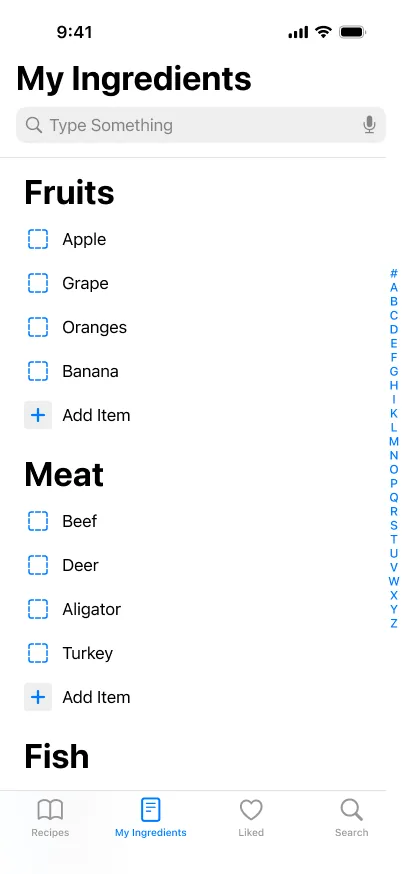
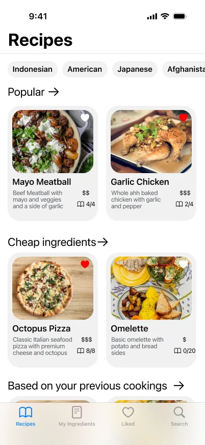
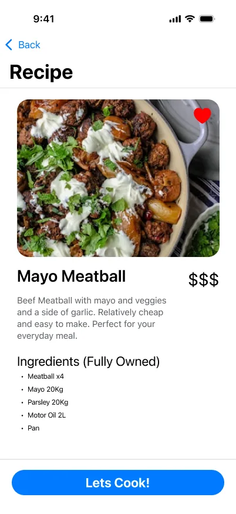
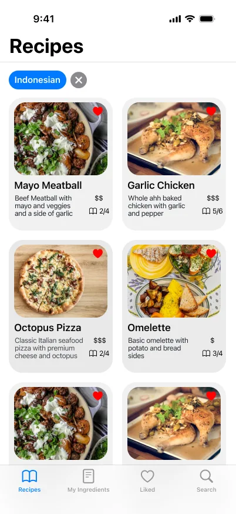
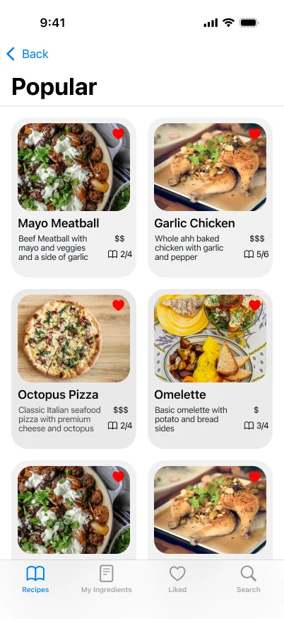
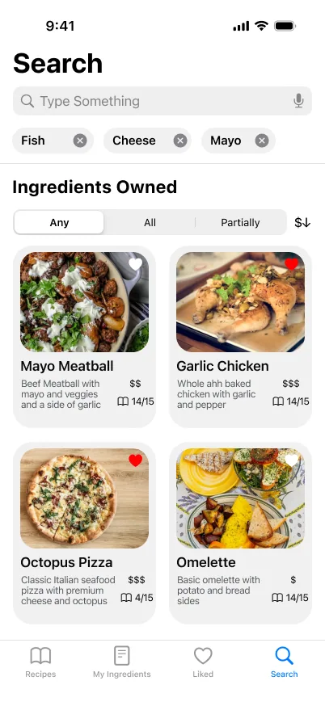
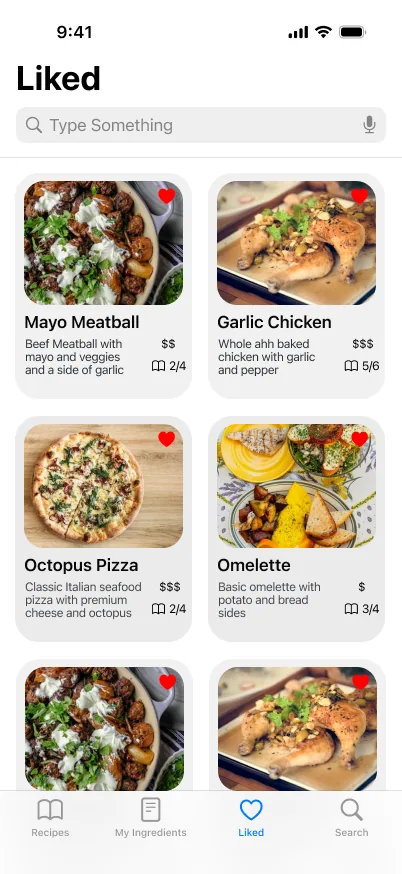
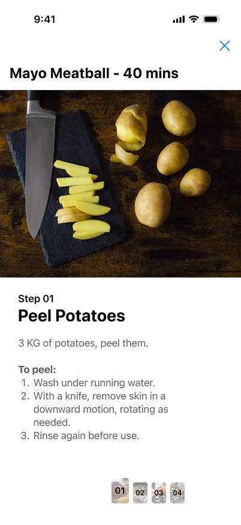
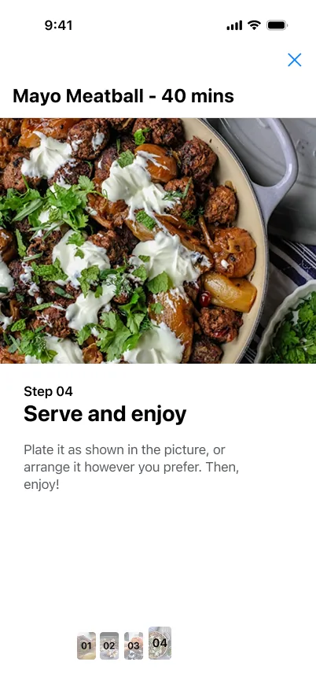

Research before pixels
Desk research on how people decide what to cook came first. The pantry idea came out of it, not out of a nice layout.
Cook with what you already have.
My first UI/UX exercise, in my first weeks at the Apple Developer Academy. No code: the brief was to learn the process — desk research, wireframes, Apple’s Human Interface Guidelines, then a clickable prototype. These are the screens that came out of it.



01The idea
Desk research kept landing on the same small frustration: people don’t lack recipes, they lack the ingredients those recipes assume. So the app keeps a pantry, and every recipe shows how much of it you already own.
My ingredients
Tick what’s in your kitchen. The list on the right reorders itself.
What you could cook
02The screens
A home screen you can scan: cuisines along the top, then rows you’d actually browse.


The part the research pointed at: what you own decides what you see.


One step per screen, so nothing is lost in a wall of instructions.


03What it taught me
It was never built, and it wasn’t meant to be. It’s where I learned the order of operations I’ve used on every screen since.
Desk research on how people decide what to cook came first. The pantry idea came out of it, not out of a nice layout.
Grey boxes until the flow held up, and only then type, colour and food photography — followed by a clickable prototype.
Tab bars, list styles, type sizes and touch targets taken from the Human Interface Guidelines, so it would feel like an iPhone app rather than a poster.